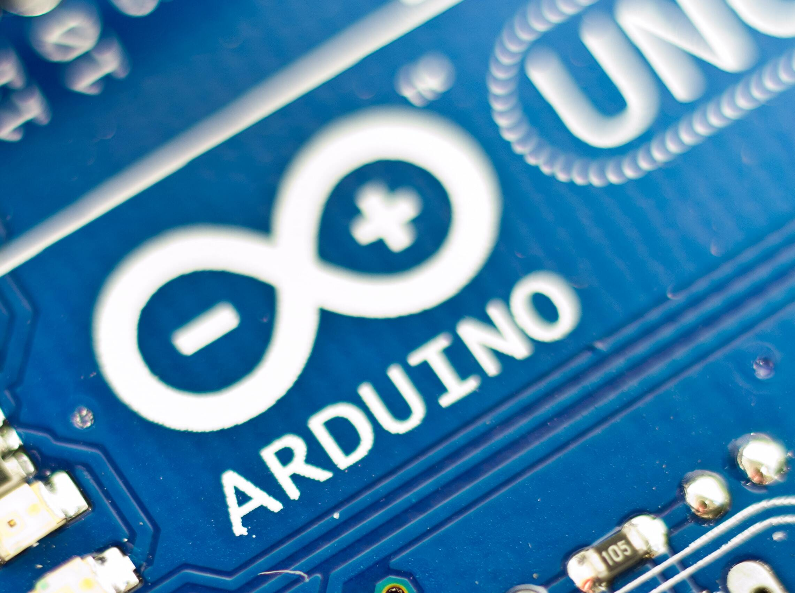
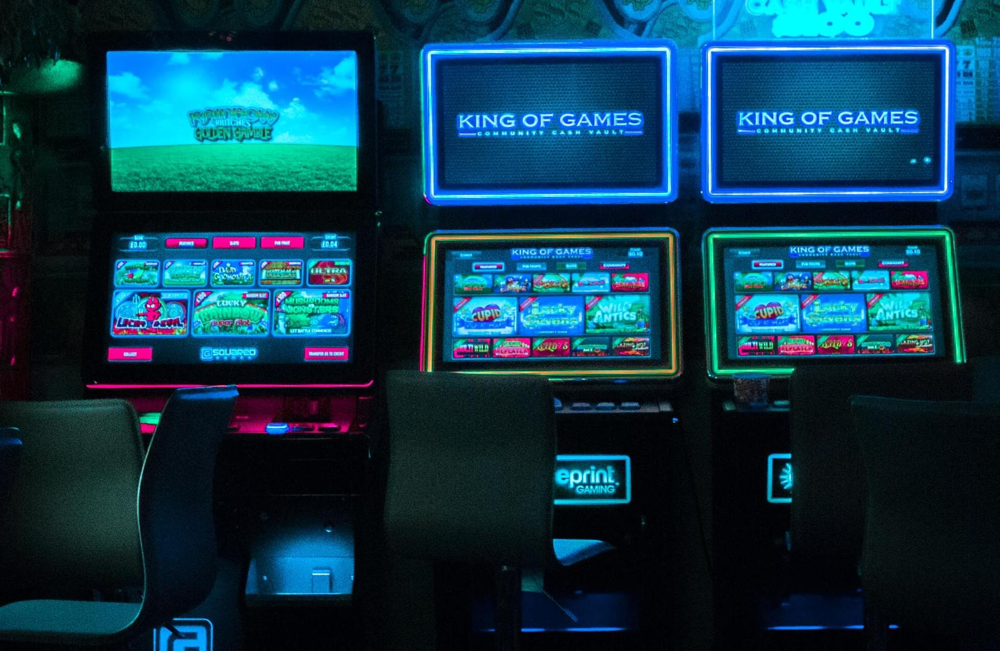

Arduino
1 van mijn hobbys is arduino programmeren! Indien u Arduino niet kent lees dan maar snel verder!

Gamen
Nog een hobby van mij is gamen Ik vind bijna elk soort game leuk!

Skateboarden
Ik vind skaten een ontsnapping aan het echte leven!
Programmeren
Niet alleen is dit mijn hobby maar ook mijn toekomst!
Allereerst wil ik het even hebben over Arduino waarom vind ik dit zo interessant? Wel als u verder leest weet u waarom ik dit interessant vind. Meer info over Arduino zelf vind u Hier!
Een hobby die vele onder ons wel eens graag doen is een spelletje spelen vandaar is dit dus ook een hobby, ontsnapping aan de buitenwereld maar ook zeker een ontspanning! Maar vergeet nooit werk en studies op de eerste plek!
De hobby die ik heel lang heb gedaan was skateboarden dit was voor mij een ontsnapping aan het echte leven. Al duurde het maar even ik genoot van elke second maar mijn passie ligt duidelijk ergens anders!
Wat begon als een nieuwsgierigheids hobby eindigde in een passie die een hele wereld voor me opende dan spreek ik natuurlijk over programmeren! Dit is iets waar ik me uren achter kan zetten en het leukste van al is het resultaat bekijken. Het is fenomenaal
dat je met een paar lijnen code een volledig programma kan maken. Dit is iets wat me het meeste van al aanspreekt en het is natuurlijk ook de toekomst van onze nakomenlingen niet te vergeten!